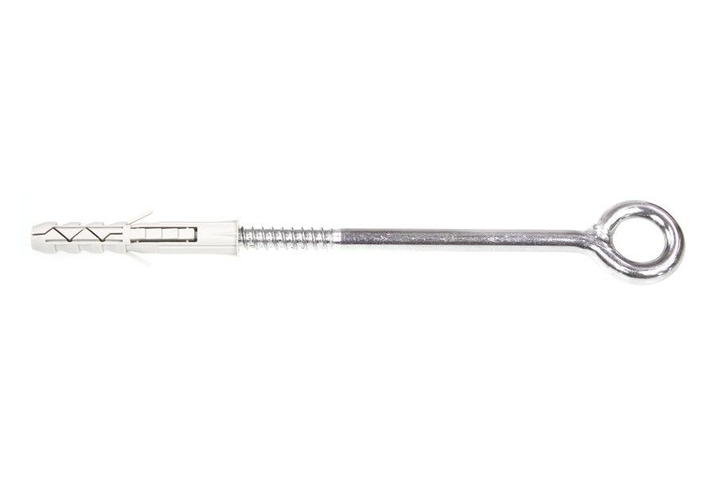

Kotvení lešení s promyšleným vedením šroubu.
Rozpěrná hmoždinka Klimas HOX s ocelovým šroubem s uzavřeným okem slouží ke kotvení stavebního lešení k nosné stěně. Znáte ji také jako lešenářskou hmoždinku nebo lešenářský šroub s okem. Polyamidové pouzdro se při zašroubování rozepře ve vyvrtaném otvoru a zachytí šroub v podkladu.
Promyšlené provedení Klimas usnadňuje správné osazení: vnitřní vodicí lišty vedou šroub centricky, zvětšená příruba drží pouzdro u ústí otvoru a rozpěrné i stabilizační výstupky omezují jeho protáčení. Ocelové oko z jednoho kusu drátu vytváří pevný bod pro připojení lešenářského kotvení.
Zvolený HOX-14120 tvoří hmoždinka 14 × 80 mm a šroub s okem 10 × 165 mm. Výrobce jej určuje do betonu, plné pálené cihly a plné vápenopískové cihly. Rozhodující je nosný materiál za povrchovou vrstvou stěny a správný návrh kotvení.

Technické údaje
Rozteč 160/240 mm rozlišuje beton a ostatní uvedené podklady. Tloušťka povrchové úpravy stěny nenahrazuje požadovanou tloušťku nosného materiálu.
Rozměry výrobku
| Průměr hmoždinky (dk) | 14 mm |
|---|---|
| Délka hmoždinky (Lk) | 80 mm |
| Průměr šroubu s okem (dw) | 10 mm |
| Délka šroubu s okem (Lw) | 165 mm |
| Vnitřní průměr oka (D0) | 25 mm |
Provedení a materiál
| Materiál hmoždinky | PA – polyamid |
|---|---|
| Materiál šroubu | Pozinkovaná ocel |
Osazení a montáž
| Průměr vrtáku (d0) | 14 mm |
|---|---|
| Minimální hloubka otvoru (h0) | 90 mm |
| Účinná hloubka kotvení (hef) | 80 mm |
| Minimální tloušťka podkladu (hmin) | 120 mm |
| Minimální vzdálenost od okraje (cmin) | 160 mm |
| Minimální osová rozteč (Los) | 160 mm v betonu; 240 mm v ostatních uvedených podkladech |
Prodávané balení
| Prodávané množství | 1 ks |
|---|
Proč si vybrat HOX
Šroub vedený správným směrem
Vnitřní vodicí lišty vedou šroub centricky do polyamidového pouzdra. Zvětšená příruba pomáhá udržet hmoždinku u ústí otvoru a brání jejímu příliš hlubokému osazení.
Pouzdro, které drží polohu
Tvarované rozpěrné lišty a stabilizační výstupky zachycují polyamidové pouzdro v otvoru. Omezují jeho protáčení během šroubování a umožňují, aby rozpěrná část pracovala v nosném materiálu stěny.
Ocelové oko z jednoho kusu
Uzavřené oko je vytvarované z jednoho kusu ocelového drátu. Vytváří bod pro připojení lešenářského kotvení a pozinkovaný povrch chrání ocelovou část před korozí. O vhodnosti celého kotvení rozhoduje podklad a návrh lešení.
Montáž krok za krokem
Připravte si
- Vrtačka vhodná pro podklad
- Vrták o průměru 14 mm
- Měřidlo hloubky otvoru
- Nářadí pro zašroubování oka
Ověřte podklad a polohu
Určete nosný materiál a polohu kotev podle návrhu lešení. Zohledněte vzdálenost od okraje a rozteče.
Vyvrtejte a vyčistěte otvor
Pro HOX-14 vyvrtejte otvor o průměru 14 mm do hloubky nejméně 90 mm. Podle postupu výrobce odstraňte odvrtaný materiál pohybem vrtáku tam a zpět při snížených otáčkách.
Vložte hmoždinku
Pouzdro osaďte do čistého otvoru tak, aby jeho rozpěrná část ležela v nosném materiálu stěny.
Zašroubujte oko
Ocelový šroub zašroubujte tak, aby zcela prošel pouzdrem. Před zatížením zkontrolujte osazení a soulad s návrhem kotvení.
Použití a správný výběr
Vhodné použití
- Beton
- Plná pálená cihla
- Plná vápenopísková cihla
Při výběru zohledněte
- Rozpěrná část musí být v nosném materiálu.
- Omítka ani izolace nenahrazují kotevní podklad.
- Zatížení a rozmístění kotev určuje návrh lešení.
HOX není kotva s jednou univerzální nosností. Před montáží určete podklad a porovnejte návrhové zatížení s příslušnou odolností výrobku.
Otázky, které pomohou při výběru
Proč má HOX-14120 hmoždinku 14 × 80 mm a šroub 10 × 165 mm?
HOX-14120 je katalogové označení sestavy. Výrobce pro něj uvádí samostatně hmoždinku o průměru 14 mm a délce 80 mm a šroub o průměru 10 mm a délce 165 mm. Číslo v obchodním označení proto nepoužívejte jako délku každé součásti.
Do jakého podkladu je HOX určený?
Výrobce uvádí beton, plnou pálenou cihlu a plnou vápenopískovou cihlu. Samotný název „univerzální hmoždinka“ nepotvrzuje použití v duté cihle, pórobetonu nebo sádrokartonu. Rozpěrná část musí být osazena v nosném materiálu.
Jaký vrták a hloubku otvoru potřebuji?
Pro zvolený HOX-14 je průměr vrtáku 14 mm a minimální hloubka otvoru 90 mm. Účinná hloubka kotvení je 80 mm. Po vrtání odstraňte odvrtaný materiál a teprve potom vložte hmoždinku.
Proč jsou v tabulce rozteče 160 a 240 mm?
U HOX-14 se minimální osová rozteč liší podle podkladu: 160 mm platí pro beton, 240 mm pro ostatní uvedené podklady. Minimální vzdálenost od okraje je 160 mm a minimální tloušťka podkladu 120 mm. Návrh kotvení musí respektovat všechny tyto podmínky současně.
Kolik kilogramů jedno oko unese?
Jedno univerzální číslo by bylo zavádějící. Odolnost závisí na podkladu a podmínkách kotvení; u lešení rozhoduje také návrh jeho ukotvení. Porovnávejte návrhové zatížení s příslušnou odolností v technickém posouzení, nikoli pouze s rozměrem oka.
Kupuji celý výrobní box, nebo jeden kus?
Tato ukázka odpovídá prodávané variantě HOX-14120-1KS, tedy jednomu kusu sestavy hmoždinky a šroubu s okem. Výrobní box HOX-14120 obsahuje 20 kusů a v obchodě je samostatným balením.
Dokumenty a další informace

Klimas. Kvalita, kterou poznáte na detailech.
U HOX se kvalitní provedení projevuje vedením šroubu, stabilizací pouzdra a ocelovým okem z jednoho kusu. Výběr podporují přesné rozměrové údaje a technické posouzení s montážními podmínkami pro jednotlivé podklady.
Dokumentace výrobceS nákupem vám pomůžeme
14 dní na vrácení
Zboží můžete vrátit do 14 dnů. S převzetím vám pomůžeme i zajištěním kurýra.
Odesíláme skladové zboží
Skladové zboží odesíláme do 24 hodin; objednávky do 15:00 ve stejný pracovní den.
Zkušenosti zákazníků
Při výběru obchodu si prohlédněte také hodnocení a zkušenosti našich zákazníků.
Individuální přístup
Potřebujete poradit s produktem nebo objednávkou? Během pracovní doby se na nás můžete obrátit.